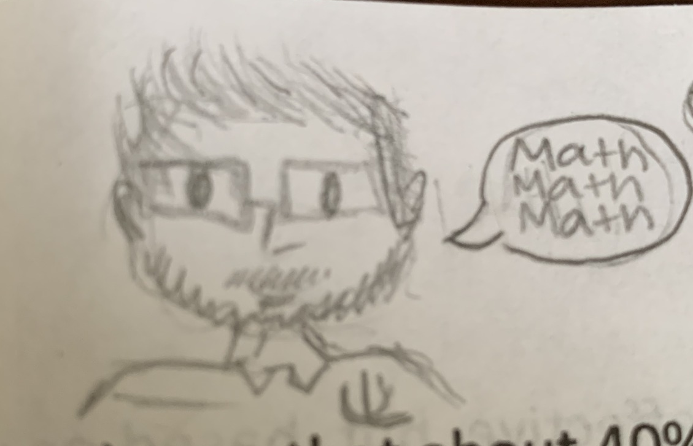

The Model with a Thousand Faces
About me and this book
Nearly everyone I’ve met thinks they are below average in math skills.
If you think about it, you should realize that it’s impossible for most people to be “below average” at something. The “average” in everyone’s mind is higher than it really is, and you’re probably closer to it than you realize. People over-estimate their abilities in so many parts of their life, but under-estimate themselves when it comes to math!
Personally, I wasn’t always crazy about math, despite the fact that my mom was a high school math teacher. I never cared for linear equations or integrals or any of that. Math seemed like an exercise in turning one set of symbols into a different set of symbols for no reason. “Find X. Don’t worry about what X is. Just find it.”
But I’ve learned over the years that there is actually a point to all the symbol manipulation! All the cool stuff you’re interested in (whether it’s the psychology of serial killers, humor, politics, relationships, or depression) depends on understanding data. Once I saw how meaningful all the math and symbols actually were, I was excited to learn more about it. It turned out to be the most important and “transferable” skill I ever picked up. It’s going to be yours too! (That’s not a threat. It’s a promise.)

Whether you become a therapist, a researcher, a professor, whether you work in industry, government, change research interests, or change therapeutic interests, you’ll always need to be an intelligent consumer (and maybe producer!) of data.
(By the way, if you provide any kind of services that aren’t based on data, that’s called fraud!)
So I hope I can get you to the point I was at when I first “got into” statistics. I ended up becoming a big statistics nerd and even got a “graduate certificate” by taking extra stats classes in grad school because I loved it all so much.
Okay, you don’t have to love statistics that much. But if you don’t end up becoming just a little more appreciative and at least a little bit more literate when it comes to statistics by the end of this class/book, I will be very sad. Like, “mascara running down my face” sad.
Don’t do that to me!
There’s a monster at the end of this book
(And its name is “The General Linear Model”)
I wrote this book for many reasons. First, it’ll save students money. As of this writing (Fall 2024-ish), I’ve saved my students somewhere between $15,308 and $35,950.23 (depends on how many would’ve bought digital, physical, or gone rogue and not gotten the book at all). I hope that number keeps growing. Who knows, maybe other instructors will adopt this book and save their own students some money.
The other reason I wrote this book is because I’ve never read a perfect statistics book for the audience I teach: Diverse students who may not have the freshest memory for mathematics. I’ve never read a book that is concise enough to convey the main ideas quickly, so that my students and I can get to our activities and examples more quickly. Most importantly, I’ve never read a stats book that adequately “connects all the dots”.
All of the statistical methods typically taught in a social sciences class are special instances of what’s called the “General Linear Model.” That’s the monster at the end of this book. She’s a good monster though, I swear. If you get to know her well enough, you’ll be able to re-learn statistics more easily, learn new “advanced” statistics more easily, spot errors in other people’s reasoning, etc. It pays to have all the dots connected!
The reason I’ve titled this book “The Model with a Thousand Faces” is because it’s really a book about one model: The General Linear Model. But it won’t be clear until maybe towards the end how all these statistical tests and models are all connected. Hopefully, by the end of this book/course you’ll see the one model behind all of its different faces. The title is also a reference to Joseph Campbell’s book “The Hero with a Thousand Faces,” where Campbell argues that all stories follow the same basic mythological patterns and archetypes. Pretty fitting analogy, I think, even though I think his conclusion is completely wrong.
Acknowledgments
It’s a great privilege to be teaching statistics, writing books about them, creating animations and games and whatnot. A lot of people had to go above and beyond in their jobs to help me develop these skills. I’m particularly indebted to my doctoral advisor Tyler Davis. I’m also grateful for my students who, intentionally or not, help me learn to be a better teacher. One student in particular, Nicole Leber, took me for my word when I asked the class to send me any errors or typos they noticed. Nicole sent me many!
My teaching assistants have also made tremendous contributions to this book, the question bank, and lecture materials, to name just a few examples. Special thanks to Wesley Malvini and Cameron Rosen!